7
Grupos de Aprendizado
GATs com atividades de ensino, pesquisa, extensão e inovação.
Tecnologia, inovação e transformação digital para o fortalecimento do SUS
Acompanhe as ações de formação, pesquisa e desenvolvimento que conectam a universidade aos serviços de saúde.
Conheça os gruposDados atualizados em
7
GATs com atividades de ensino, pesquisa, extensão e inovação.
364
Participantes capacitados em ações do GAT 2.
14
Unidades de saúde alcançadas nas atividades formativas.
50
Usuários do SUS previstos na pesquisa do GAT 5.
200
aproximadamenteProfissionais envolvidos na coleta e preparação do GAT 6.
3
InfoVida, SisAPEC-Work e aplicativo de interações medicamentosas.
Sete grupos, diferentes frentes de trabalho para a saúde digital.
Pesquisa sobre letramento digital e produção de materiais formativos para profissionais da rede pública municipal.
Capacitações em Saúde Digital no SUS e desenvolvimento do aplicativo InfoVida.
Avaliação de usabilidade em unidades de atendimento e avaliação heurística por estudantes da Ciência da Computação.
Pesquisa e prototipagem para integração com dispositivos vestíveis, captura de áudio e reconhecimento de fala.
Pesquisa qualitativa sobre barreiras sociais, econômicas, culturais e de habilidade no uso de tecnologias em saúde.
Coleta com profissionais da Santa Casa de Alfenas e estruturação de curso sobre inteligência artificial na saúde.
Desenvolvimento de aplicativo de interações medicamentosas, processo de patente, pesquisa e artigo científico.
Encerramento previsto para a primeira quinzena de julho de 2026.
Videos concluidos e plataforma do curso criada.
Curso planejado para a segunda quinzena de agosto de 2026.
Protótipo do InfoVida em fase final de desenvolvimento.
Validação prevista antes da disponibilização.
Disponibilização prevista entre agosto e setembro de 2026.
Finalização prevista para julho de 2026.
Tabulação dos dados e elaboração de relatório.
Resultados orientarão novas versoes e estudos de interoperabilidade.
Arquitetura inicial de integração definida.
Protótipos de captura segura de áudio serão implementados.
Testes de segurança, privacidade, LGPD e usabilidade serão necessários.
Preparação de implementação piloto após validações.
Coleta realizada durante junho e julho de 2026.
Transcrição, tabulação e análise dos dados.
Resultados e relatórios serão elaborados após a conclusão da análise.
Aplicação iniciada com aproximadamente 200 profissionais.
Consolidação e análise dos resultados após a coleta.
Projeto de farmacovigilância condicionado a aprovação dos órgãos competentes.
Aplicativo de interações medicamentosas em desenvolvimento.
Divulgação condicionada a autorização após registro de patente.
Submissão de artigo planejada após análise e redação dos resultados.
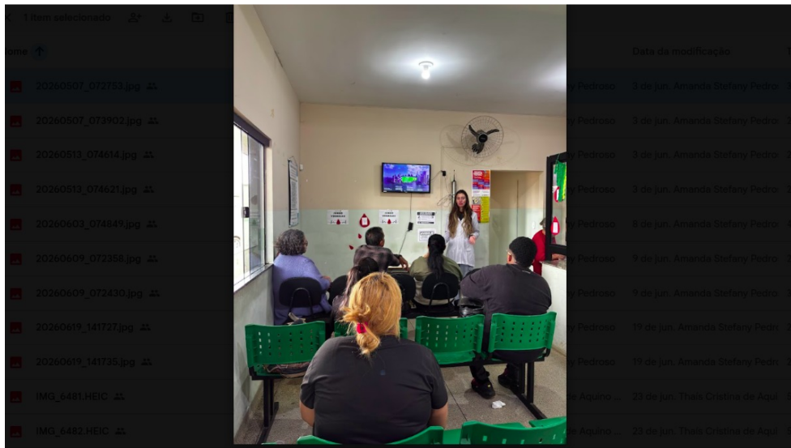
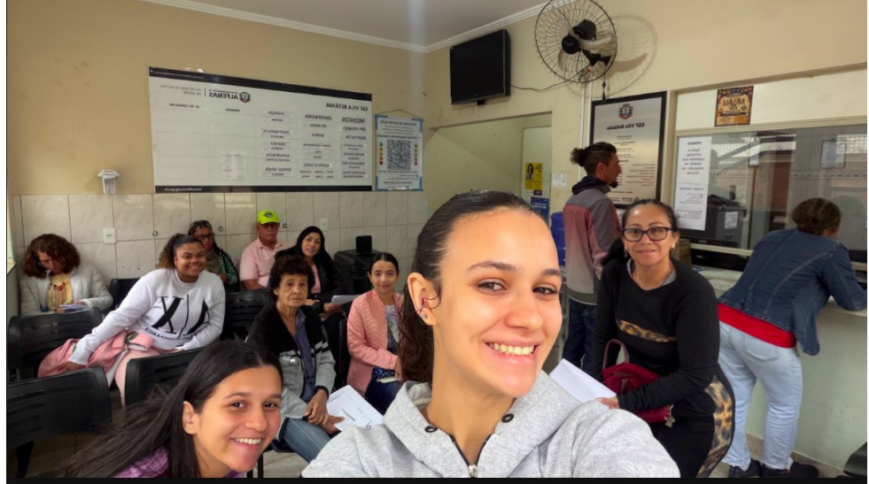
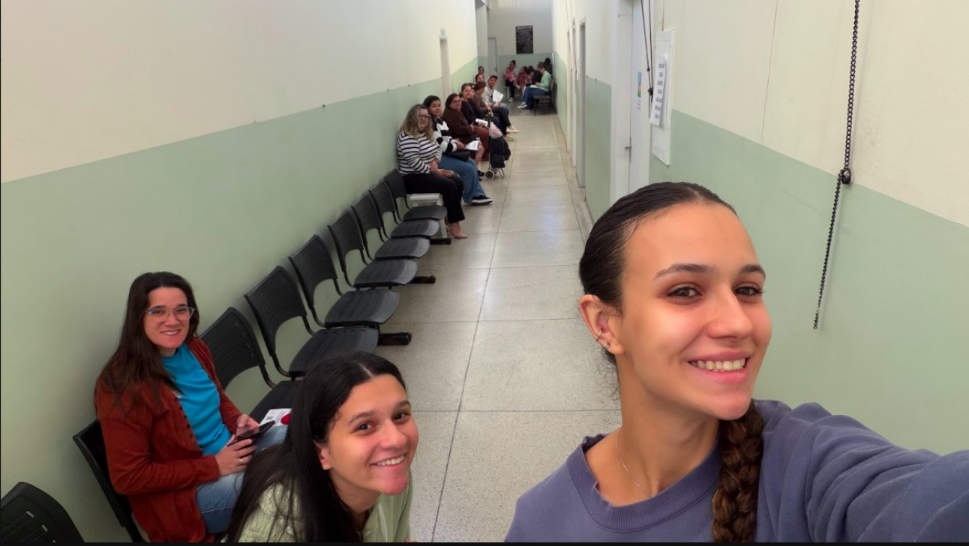
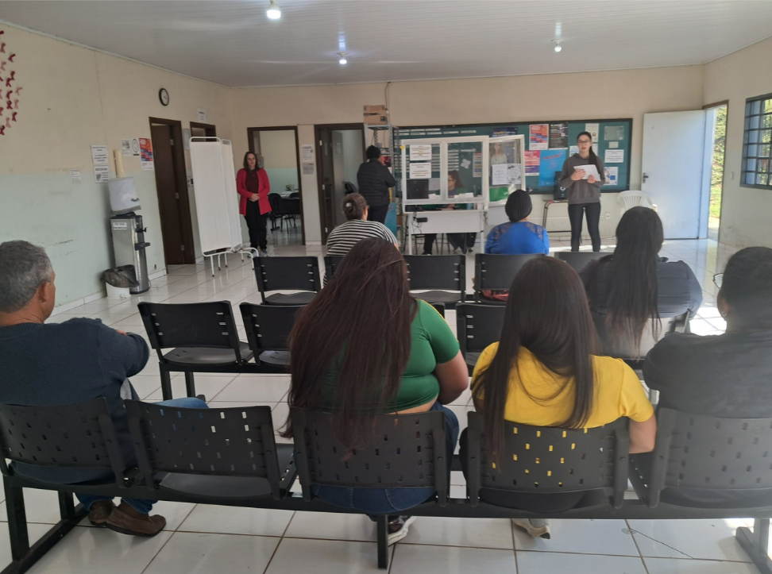
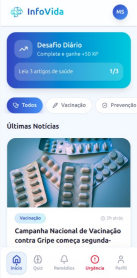
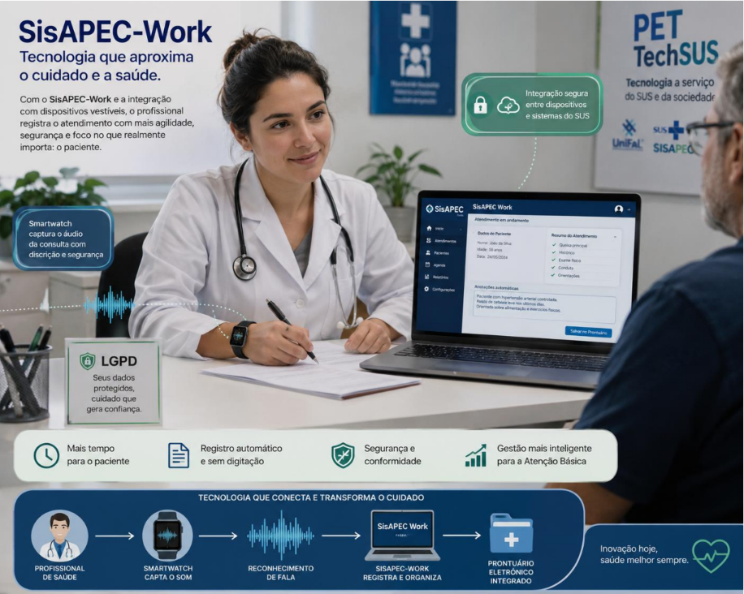
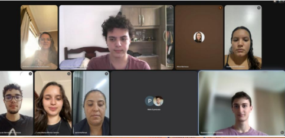
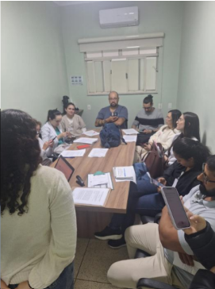
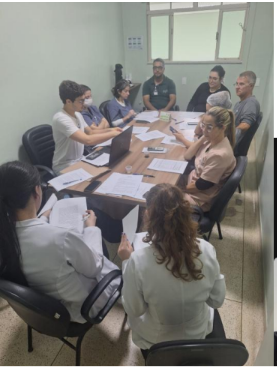
Divulgar informações em saúde, prevenir fake news e apoiar monitoramento em saúde.
Estudar captura segura de áudio por smartwatch e reconhecimento de fala aplicado a saúde digital.
Auxiliar profissionais na consulta e identificação de interações medicamentosas.
Equipe envolvida nas atividades institucionais, acadêmicas, científicas e tecnológicas relacionadas ao PET TechSUS.

Coordenadora geral
Atuação na orientação acadêmica, estruturação científica e articulação institucional.
Currículo Lattes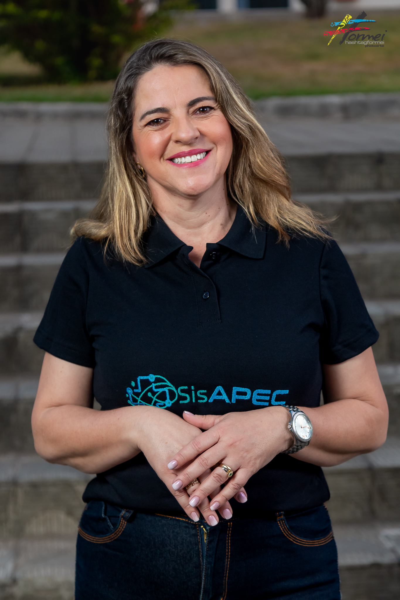
Coordenadora Tutora do GAT 7
Colaboração nas atividades institucionais do PET TechSUS.
Currículo LattesCoordenadora Tutora do GAT 1
Colaboração nas atividades institucionais do PET TechSUS.
Currículo LattesCoordenador Tutor do GAT 5
Colaboração nas atividades institucionais do PET TechSUS.
Currículo Lattes
Tutor do GAT 6
Colaboração nas atividades institucionais do PET TechSUS.
Currículo LattesTutor do GAT 7
Colaboração nas atividades institucionais do PET TechSUS.
Currículo Lattes
Coordenadora Tutora do GAT 3
Colaboração nas atividades institucionais do PET TechSUS.
Currículo Lattes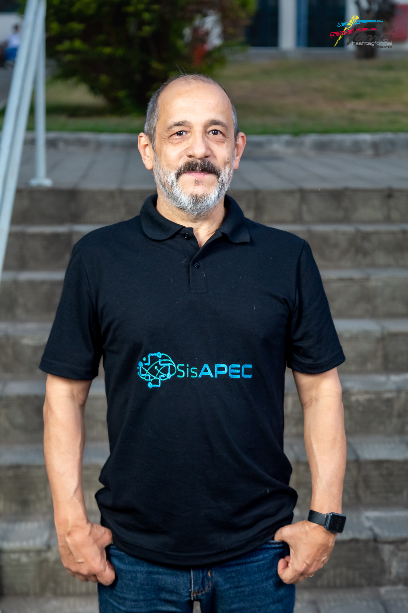
Tutor do GAT 2
Colaboração nas atividades institucionais do PET TechSUS.
Currículo Lattes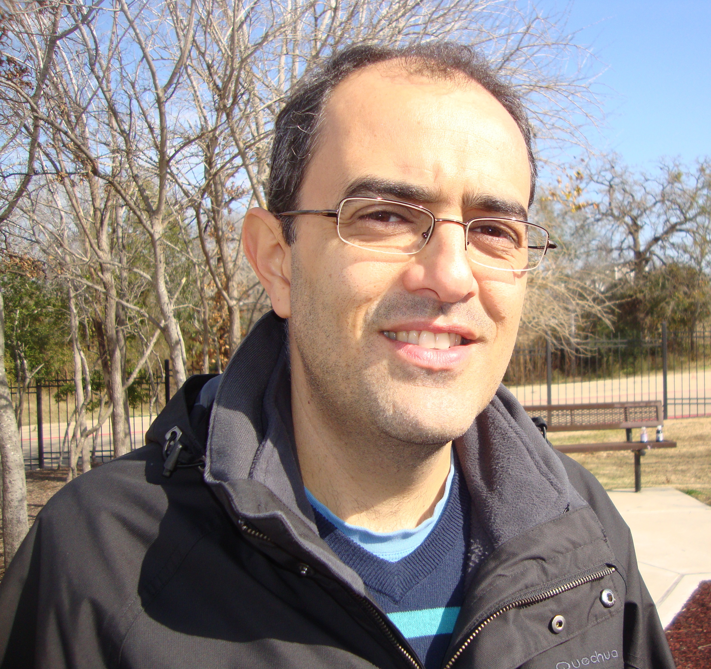
Tutor do GAT 5
Colaboração nas atividades institucionais do PET TechSUS.
Currículo LattesTutora do GAT 3
Colaboração nas atividades institucionais do PET TechSUS.
Currículo LattesTutor do GAT 1
Colaboração nas atividades institucionais do PET TechSUS.
Currículo LattesCoordenador Tutor do GAT 6
Colaboração nas atividades institucionais do PET TechSUS.
Currículo Lattes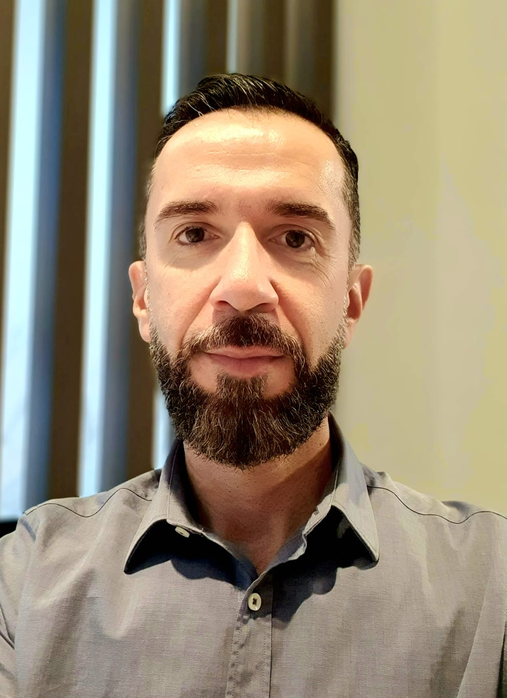
Coordenador Tutor do GAT 4
Colaboração nas atividades institucionais do PET TechSUS.
Currículo LattesTutor do GAT 4
Colaboração nas atividades institucionais do PET TechSUS.
Currículo Lattes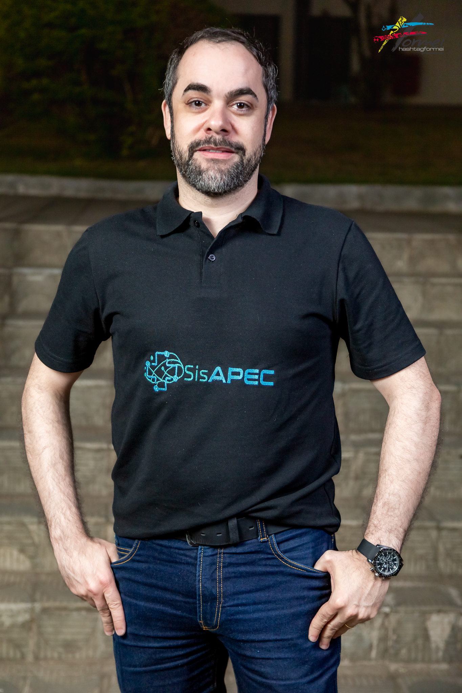
Coordenador Tutor do GAT 2
Colaboração nas atividades institucionais do PET TechSUS.
Currículo Lattes